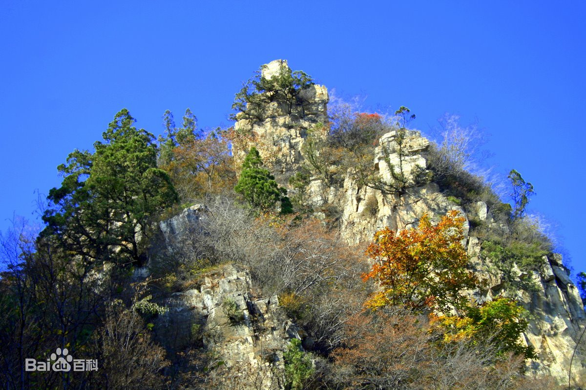

易县位于保定市西北部，太行山北端东麓。地理坐标东经114°51'—115°37'，北纬39°02'—39°35'。易县总面积为2534平方公里。易县距北京120公里，天津160公里，保定60公里。易县总面积为2534平方公里。
易县地处太行山区向华北平原过渡倾斜地带，十分之七为山地，与定兴县相邻的高陌乡是全县唯一平原乡，平均海拔324米，地势由西向东下降明显，流水落差大，易患水灾；山体多为侵蚀、剥蚀、岩溶地貌。

易县属温带季风气候区，春秋干旱多风，夏季炎热多雨，春季平均气温3.2℃，夏季平均气温32.2℃，秋季平均气温-3.3℃，全年极端最低气温-23℃，极端最高气温41℃。冬季严寒少雪，四季分明。
2018年，全县总户数208641户，年末总人口581244人。当年出生6130人，当年死亡2157人，人口自然增长率0.68%。全县常住人口564974人，较上年增长0.3%。其中，城镇人口195430人，城镇化率为34.59%。